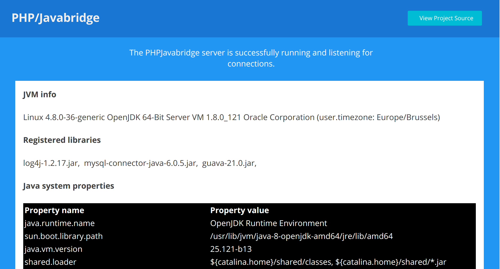

Javabridge server installation¶
Info
A Javabridge server is required and acts as an intermediate between the JVM and PHP runtime. Here's the steps to customize, build and run your own instance. Don't be afraid, it takes few minutes.
Requirements¶
- An installed OpenJDK or OracleJDK, 7 or 8+ (JRE is sufficient for running).
- The recommended Apache Tomcat server for deployments (any servlet 2.5+ spec container should work) or the webapp-runner for standalone.
Java installation¶
On ubuntu based systems, you can install java by typing:
$ sudo apt-get install openjdk-8-jdk
For other recipes and systems, refer to the extended java installation notes.
Quick install¶
Note
The quick install instructions are based on the forked php-java-bridge server.
They promote the recommended installation workflow based on Tomcat, a popular servlet container server widely available nowadays (i.e: Digitalocean droplets...).
A optional section describe how to use the webapp-runner instead of regular Tomcat install. This allows to start, control the bridge server straight from the command line (standalone) or deploy on some cloud services (i.e. Heroku).
For spring-boot support, you can also look at Alternative installation section.
Build and customize¶
Replace the version below by the latest Javabridge release: 
# 1. Download and unzip the latest php-java-bridge sources
$ wget https://github.com/belgattitude/php-java-bridge/archive/7.1.3.zip -O pjb.zip
$ unzip pjb.zip && cd php-java-bridge-7.1.3
# 2. Customize and build your own bridge:
# Example below contains some pre-made gradle init scripts
# to include jasperreports and mysql-connector libraries to the
# build. They are optional, remove the (-I) parts or provide
# your own.
$ ./gradlew war \
-I init-scripts/init.jasperreports.gradle \
-I init-scripts/init.mysql.gradle
# The build files are generated in the '/build/libs' folder.
Tip
As shown above, adding library dependencies can be done easily through gradle init-scripts arguments (-I). To learn mode, have a look to some pre-made init scripts included in the latest distribution or provide your own.
Deploy and run¶
Danger
For security reasons, the Javabridge server cannot be exposed on a public network. It must be limited to interactions on the same host/network and should be executed with the same user as the php client (not root). Bind Tomcat to localhost or setup a firewall where applicable.
Option 1: Tomcat¶
Ensure Tomcat is installed or
quickly run sudo apt-get install tomcat8 on Ubuntu based systems,
then copy the builded war file in the tomcat webapps folder.
# 3. Deploy or update the servlet on Tomcat:
# Example below is based on Ubuntu with Tomcat8
# and can be applied in the same way for other systems,
# just replace the webapp directory location.
$ cp ./build/libs/JavaBridgeTemplate.war /var/lib/tomcat8/webapps/MyJavaBridge.war
Tomcat will automatically deploy and register the servlet. Wait few seconds and point
your browser to http://localhost:8080/MyJavaBridge
(note the /MyJavaBridge uri corresponds to the deployed war filename, easily changeable)
and check the landing page:

Option 2: Standalone¶
The webapp-runner actually embeds a standalone runnable Tomcat and is a viable option for those who don't want to install an additional system wide server.
You can download the webapp-runner on maven central or alternatively from the command line:
# Get the latest webapp-runner from maven.
$ export WR_VERSION="8.5.15.1";
$ wget http://central.maven.org/maven2/com/github/jsimone/webapp-runner/${WR_VERSION}/webapp-runner-${WR_VERSION}.jar" -O webapp-runner.jar
Run your server JavaBridgeTemplate.war file with the webapp-runner:
$ java -jar webapp-runner.jar /path/to/JavaBridgeTemplate.war --port 8093
See travis example script here.
Using the bridge¶
Once the connection is working, jump to the Getting started and how to connect section.
Alternative install¶
Summary
This install method should be considered whenever you need a standalone binary or intend to develop your own java classes in a sprint-boot architecture.
This alternative install method is based on the pjb-starter-springboot starter kit. In comparison to the quick installation above:
- Provide also a binary runnable from the cli (standalone / embedded Tomcat 8.5+).
- Foundation to add write extra Java code in the spring-boot way (skeleton).
- Heavier size (approx 10Mb more than the barebone version: 1Mb, 15Mb more for standalone)
- No performance regressions measured from the barebone PHP/Javabridge
- Might not include the latest release of the bridge (not as frequently updated).
Please check the pjb-starter-springboot to get the latest instructions or follow the procedure below:
Build and customize¶
The instructions are very similar from the barebone PHP/Javabridge installation described above:
# 1. Clone the pjb-starter-springboot skeleton (-b to checkout a specific release)
$ git clone https://github.com/belgattitude/pjb-starter-springboot
$ cd pjb-starter-springboot
# 2. Customize and build your own bridge:
# Example below contains some pre-made gradle init scripts
# to include jasperreports and mysql-connector libraries to the
# build. They are optional, remove the (-I) parts or provide
# your own.
$ ./gradlew build \
-I init-scripts/init.jasperreports.gradle \
-I init-scripts/init.mysql.gradle
# The build files are generated in the '/build/libs' folder.
Tip
As shown above, adding library dependencies can be done easily through gradle init-scripts arguments (-I). To learn mode, have a look to some pre-made init scripts included in the latest distribution or provide your own.
And check the build\libs directory for the following files:
| File | Description | Approx. size |
|---|---|---|
JavaBridgeStandalone.jar |
Standalone server with an embedded Tomcat 8.5+. | ± 32Mb |
JavaBridgeTemplate.war |
War file, ready to drop into Tomcat webapps folder. | ± 12Mb |
Run in standalone¶
You can easily run the a JavaBridgeStandalone.jar file from the cli:
# Run the PHPJavaBridge server in standalone
$ java -jar ./build/libs/JavaBridgeStandalone.jar -Dserver_port=8089
Check the landing page for status and
use the connection localhost:8089/servlet.phpjavabridge in your
bridge connection parameters.
Tip
As the standalone version embeds and runs on Tomcat 8.5+ you might wonder how it compares from a regular tomcat deployment? One important difference concerns the system integration and with the provided OS version:
- Error and log files are maintained and rotated in standard directories.
- Automatic startup is provided out-of-the-box.
And if standalone gives a lot of freedom, it comes with the need to control the service by yourself (supervisord or cli scripts...). Up to you to decide which method is applicable, the pjb-starter-springboot offers both posibilities.
Run on Tomcat¶
Ensure Tomcat is installed or
quickly run sudo apt-get install tomcat8 on Ubuntu based systems,
then copy the builded war file in the tomcat webapps folder.
# 3. Deploy or update the servlet on Tomcat:
# Example below is based on Ubuntu with Tomcat8
# and can be applied in the same way for other systems,
# just replace the webapp directory location.
$ cp ./build/libs/JavaBridgeTemplate.war /var/lib/tomcat8/webapps/MyJavaBridge.war
Tomcat will automatically deploy and register the servlet. Wait few seconds and point
your browser to http://localhost:8080/MyJavaBridge
(note the /MyJavaBridge uri corresponds to the deployed war filename, easily changeable)
and check the landing page:
Warning
For obvious security reasons, the Javabridge server cannot be exposed on a public network. It must be limited to interactions on the same host/network and should be executed with the same user as the php client (not root). Bind Tomcat to localhost or setup a firewall where applicable.
Composer install¶
As a third alternative, the pjbserver-tools standalone server offer a pre-made server binary and can be installed straight from composer.
Warning
The pjbserver-tools package is not fit for production usage (yet), its best use is for unit-tests (travis...) or local development only.